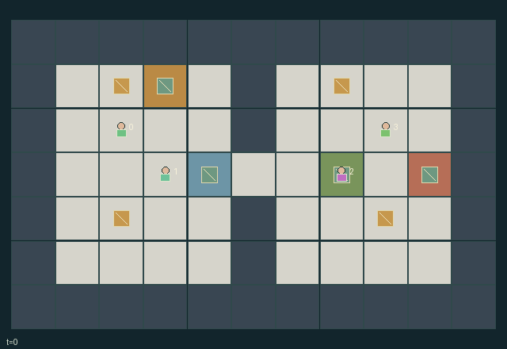

GI150 · Relay Foundry

Complete four finite serial orders in FIFO order by relaying parts through three complementary manufacturing capabilities and one shared portable clamp.
Identity and original contract
4 independently actionable roles; 13 discrete commands per role; 153 native observation columns per role; original horizon 192 steps. Declared per-step reward range: -0.01 to 1.5. Observation regime: partially_observable.
Source SHA-256: c9dedefd7cfb5f8f316d9ffabf6862034fdc8f50c90aa8a10ad10d75a1de71a9
The objective, rewards, population, map and horizon remain original. A preview is not a success claim.
Objective and gameplay
Complete four finite serial orders in FIFO order by relaying parts through three complementary manufacturing capabilities and one shared portable clamp.
Part and clamp ownership, the one-cell west/east corridor, same-tick assistance at powered stations, clamp heat and serial shipping order jointly constrain teammates feasible progress.
- Roles 0, 1 and 2 alone cut, weld and calibrate respectively; everyone can carry, assist or ship.
- Each worker holds at most one part; the only clamp can travel with a part or separately.
- Powered work requires the role at its station, the cool clamp, and another worker assisting from an adjacent cell in the same tick.
- The clamp heats to three after welding or calibration; work requires heat zero at the start of the tick.
- Only the current serial queue head can ship; stages never reverse and finite parts never respawn.
- Entity sight is Manhattan radius three; the map, shipping count and audit counts are public.
- Joint reward is -0.002 per step, +0.1 per stage advance and +1 per shipment.
- Four shipments finish the episode; otherwise the horizon is 192.
Ending: Terminate when queue_head equals 4, meaning all four physical parts are shipped. Otherwise truncate at 192 nonterminal steps.
What this game explores
Resource commons & externalities: An action changes a persistent resource or burden that another role also encounters. Compare extraction with maintenance and record the downstream resource trajectory.
Commitment, exchange & governance: Promises consume time, liquidity, access or material. Separate an announced agreement from a binding commitment and from its eventual delivery; log cancellation and expiry too.
Complementary production & service: A useful outcome requires ordered stages, scarce equipment or another role's capability. Measure real completed products and resource circulation rather than counting intermediate actions as success.
Joint transport & shared access: Positions, load geometry, occupancy and persistent access constrain whose action can succeed next. Distinguish physical handoff, shared controls and simultaneous force from a cosmetic cooperation label.
These are questions supported by rule structure, not observed learning effects.
Play it: operating walkthrough
crucibles play --game gi150Keep Python running and open its printed address. Select this game, set a seed and press Create session. The game itself is always English.
Assign a role range to Host with Assign / take over, or Assign all roles. Invite a second participant with Create player invitation, then assign a disjoint subset. Every original role is available.
For every owned role choose a legal command and press Queue. Arrow keys / WASD queue a declared directional action for the current role camera when available. Space or Advance one joint step advances everyone together. Non-directional games use the selectors.
Unqueued roles use the labelled untrained uniform-legal policy. Take over or release roles before the next step without resetting. Full-state debug is privileged and permanently logged; role cameras preserve permissions. Close the session to retain logs. Server restart does not restore sessions.
Complete command reference
IDs and English labels exactly match the manifest. Availability depends on role, resources, location and phase. An available action can still have no productive effect.
0·Wait
1·Move north
2·Move east
3·Move south
4·Move west
5·Pick up or drop a part on this cell
6·Operate matching station or ship current FIFO head
7·Assist an adjacent powered station
8·Take or release the shared clamp on this cell
9·Pass held part and clamp to adjacent agent 0
10·Pass held part and clamp to adjacent agent 1
11·Pass held part and clamp to adjacent agent 2
12·Pass held part and clamp to adjacent agent 3
Roles and capability identifiers
These original role names describe capabilities, not interchangeable skins. Check each owned role's legal selector before planning handoffs.
agent_0·Cutter: uniquely advances raw parts to stage 1
agent_1·Welder: uniquely advances stage 1 to stage 2 using shared clamp and assistant
agent_2·Calibrator: uniquely advances stage 2 to stage 3 using shared clamp and assistant
agent_3·Runner and assistant: transports, powers linked stations and ships queue orders
Information and observation permissions
Map and audit counts are public. Entity records are current Manhattan-radius-3 observations without wall occlusion. Own attributes are explicit; hidden entity fields use -1 plus a zero visibility bit. The renderer must use the same entity visibility, and public events are present in flat observations.
The GIF is full-state debug and may reveal hidden entities or private state. Train on obs[agent], not the picture, state tree or another role's private row. Field slices and visibility are in the original manifest.
Reinforcement-learning integration
import jax
from crucibles_jaxmarl import make
env = make("gi150")
key = jax.random.PRNGKey(0)
key, rk, ak, sk = jax.random.split(key, 4)
obs, state = jax.jit(env.reset)(rk)
actions = env.sample_actions(ak, state)
obs, state, rewards, dones, info = jax.jit(env.step_env)(sk, state, actions)
done = dones["__all__"]Observations are float32 vectors of width 153; actions are scalar int32; masks have 13 entries. Supply all 4 roles each transition. Masked sampling is an engineering reference, not a trained learner.
step_env retains terminal data without reset. step performs outer autoreset and keeps terminal data in info["raw_state"] and info["raw_observation"]. Use dones["__all__"] for episode boundaries; separate completion, failure and time limit in analysis.
JIT or vmap equal identities and shapes. Split independent reset, policy and transition keys. Group different shapes explicitly; do not shrink the population or horizon. Host rendering stays outside training.
Training questions and fair evaluation
Define valid completion from the objective before fitting. Preserve original rewards and also report real deliveries/services, losses, resource state, unresolved episodes and per-role returns. Animation is not a reward signal.
An action changes a persistent resource or burden that another role also encounters. Compare extraction with maintenance and record the downstream resource trajectory.
Promises consume time, liquidity, access or material. Separate an announced agreement from a binding commitment and from its eventual delivery; log cancellation and expiry too.
A useful outcome requires ordered stages, scarce equipment or another role's capability. Measure real completed products and resource circulation rather than counting intermediate actions as success.
Positions, load geometry, occupancy and persistent access constrain whose action can succeed next. Distinguish physical handoff, shared controls and simultaneous force from a cosmetic cooperation label.
Compare memory, communication or centralized critics under matched actor information. Declare critic access; keep actor inputs role-filtered. Match partner/opponent distributions, masks, compute and checkpoint selection. Final tests never enter fitting or selection.
Independent training runs or source-pairing blocks are inferential units; episodes from one policy are not independent training replications. Save hashes, keys, versions, device, time and cost. Negative, zero, failed and indeterminate outcomes are valid. No trained checkpoint or target score is supplied.
Classification and evidence
Overlapping editorial labels are reading aids, not proof of novelty, difficulty, strategic equivalence or learning effects.
- Resource commons & externalities
- Evidence
scene.rules.3: The clamp heats to three after welding or calibration; work requires heat zero at the start of the tick.
- Commitment, exchange & governance
- Evidence
manifest.actions.8: Take or release the shared clamp on this cell
- Complementary production & service
- Evidence
manifest.task.objective: Complete four finite serial orders in FIFO order by relaying parts through three complementary manufacturing capabilities and one shared portable clamp.
- Evidence
scene.rules.7: Four shipments finish the episode; otherwise the horizon is 192.
- Joint transport & shared access
- Evidence
scene.rules.0: Roles 0, 1 and 2 alone cut, weld and calibrate respectively; everyone can carry, assist or ship.
Source, receipts and preview limits
The world-only English GIF replays saved untrained legal actions through the original kernel. At most 25 actual endpoints include initial and terminal state; no invented interpolation. It is full-state debug, not the role observation.
Original source, observation slices, manifest and mechanism
Native receipt · Presentation receipt
Engineering passes do not establish learning. Nonzero floating differences remain recorded and undetermined; no new tolerance was introduced. Human scores remain unverified.